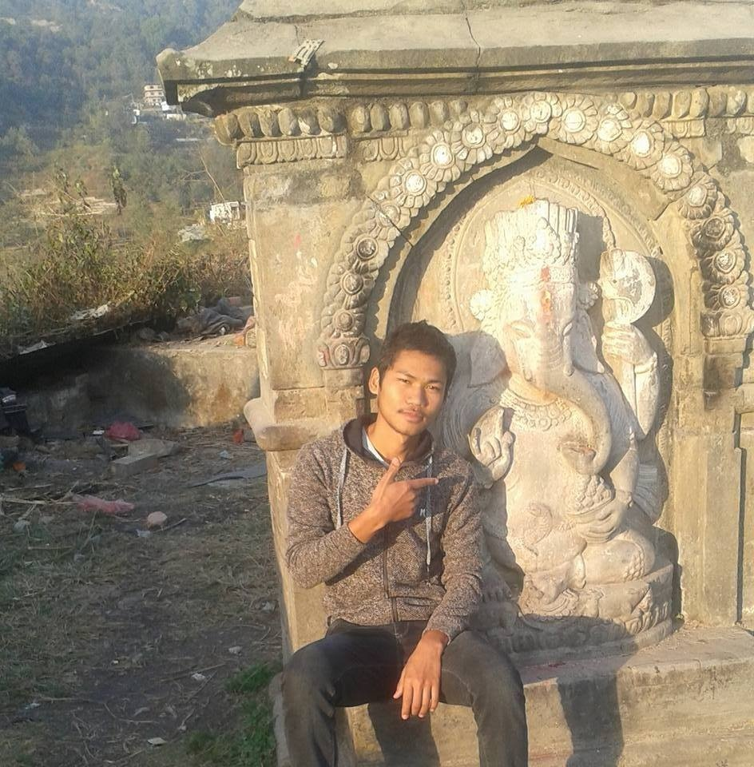

My Photo
I enjoy watching movies and playing puzzle game a lot. Among puzzle games solving Rubik's cube is my favorite. I can solve the Rubik's cube in less than 2 minutes. i also love to travel new places which help me to have new ideas. My favorite animal is cat and favorite color is yellow.
Beside this i love computer a lot. I first got accessed to the computer in my school when i was in grade 6. At that moment i got curious about the computer thinking how machines can solves a human problem in just a few second. And what does this thing thinks really. No idea about it.
My mom brought me a laptop when i was just 16 years old. After getting a laptop i begin to research my childhood curiosity and fall in love with the computer programming language. After that, i has learned few programming languages like C++, HTML5 etc. I loves coding a lot Most of the time I tries to create new thing through coding.